음식으로 세상을 따뜻하게(溫世)
(주)온세까세로

2025 제 7회
강원특별자치도 일자리대상
-
설립일
2017년 04월 10일
-
매출액(백만원)
00 억원
-
사원수
00 명
-
자본금(백만원)
00 억원
OUR BRAND STORY
가정 간편식을 제조하는
온세까세로입니다.
온세까세로는 남미에서 30년간 8개 나라 이민생활을 통해 체화된 남미식 간편식 제조 기술을 기반으로 창업을 하였고,
지역의 농산물을 활용한 베이커리를 100% 자체 기술로 개발 및 제조하여 마켓컬리, CU편의점, GS편의점, 삼성웰스토리 등에 판매하고 있습니다.
특히 맛과 영양 그리고 신선도 면에서 손색이 없지만 단지 생김새 때문에 외면받는 못난이 농산물과 식문화 변화로 인해 남는 잉여 농축산물을 활용하여
제품을 생산, 농가 소득 증대에 기여하고, 지역의 경력단절 여성과 고령자, 미취업 청년 등 취약계층을 우선 고용하는 사회적 가치를 실천하는 고용노동부 인증 사회적기업입니다.
-
ABOUT
ONCE CASERO -
온세까세로는
여성기업입니다.여성 기업인으로서의
사명감을 가지고 직원 모두가 평등한 회사를 일구기 위해 노력할 것입니다. -
온세까세로는
사회적기업입니다.취약계층의 경제적 자립을 지원하고 제품의 원료가 되는 농산물을 생산하시는 농민들의 소득 향상에 기여한다는 사명을 잊지 않을 것입니다.
연혁
강원도 청정 농산물로
수제 간식을 만들다
-
00국방 연구개발 장려금 금상 수상 무기체계 개조개발 사업자 선정 및 협약 체결 잠수함용 전자전 ES(전자지원) 장비 국산화 개발 인천테크노파크 확대산업기술단지 사업자 최종 선정 서울시 공공자전거/QR단말기 수주 L-SAM 다기능레이다 시제(전원/제어보드) 수주
-
00산업기술진흥 유공포상 국무총리상 수상 경기도 유망중소기업 선정
-
00항공우주 품질경영시스템 획득 피아식별기 Mode5 성능개량 사업 수주(해상/항공) 경기도 성실납세자 선정 대표이사 변경(임만규 대표이사 취임)
-
00산업기술진흥 유공포상 국무총리상 수상 경기도 유망중소기업 선정
재무정보/백분위 정보
Finanace
information
동종업종 내 순위
자본금(백만원)
당기순이익(백만원)
매출액
사업소개
청정 강원도에서 재배된 농산물을 이용하여
밀키트나 냉동식품 제품 개발 및 생산
-
온세까세로 지향점은 ‘함께 사는 세상’
지역 친환경 농산물 재료로 만들어 온 가족이 건강하고
맛있게 먹을 수 있도록 생산하고 있습니다. -
지역사회와의 상생, 판로 네트워크 구축
지역 농산물을 활용하여 제품을 생산하고 판매하는
과로컬푸드의 우수성을 홍보하고 있습니다. -
농산물 폐기비용 절감, 농가소득 증대
‘못난이 농산물＇을 활용하여 소득 증대와 판로 확보
폐기물을 줄여 환경문제 기여하고 있습니다. -
취약계층 고용 및 따뜻한 기부활동
취약계층 일자 제 지속적 기부활동을
실천하고 있습니다.
제품소개
하나 하나 정성을 들여 만들어 소비자가 안심하고 맛있게 드실 수 있습니다.
-
01강원우유 생크림빵
강원우유를 주재료인 생크림빵으로 지역 농축산물 홍보 취지로 출시
(우유.딸기.초코크림빵)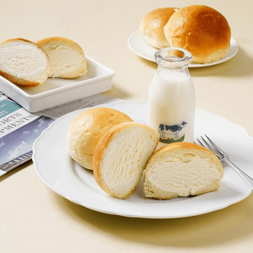 -
02소금산 소금빵
원주 대표 관광단지인 소금산을 알리고자 소금산 소금빵 출시
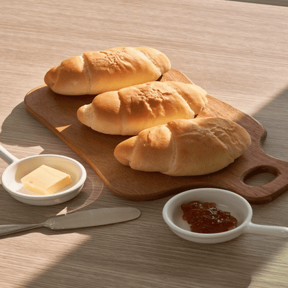 -
03조엄고구마 크림 토토미 원주빵
원주시농업기술센터에서 주관한 “원주시특산자원융복합베이커리” 사업으로 개발된 빵 제조
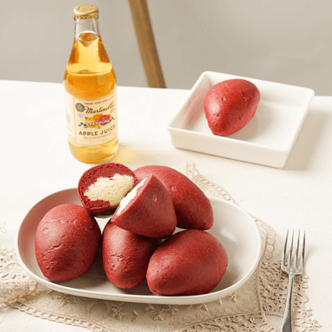 -
04원주 감자빵
원주산 비규격 감자를 활용한 감자빵 출시
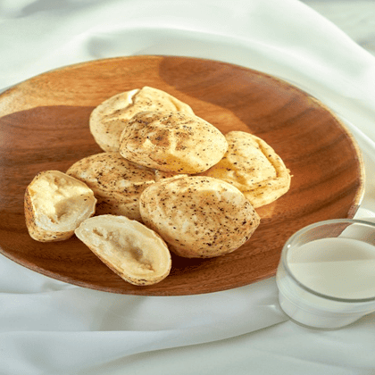 -
05원주 고구마빵
원주산 비규격 고구마를 활용한 감자빵 출시
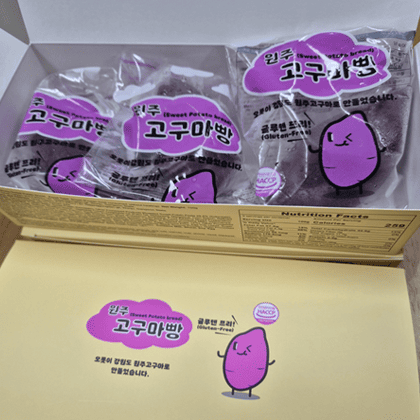 -
06원주 쌀샌드
원주 특산자원 중의 하나인 원주 토토미쌀로 만든 샌드.
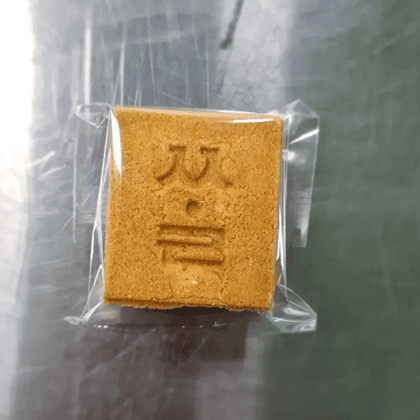 -
07소보로 크림 소금빵
국내산 가루미쌀로 만든 저당 소보로 소금빵. CU편의점에 출시.
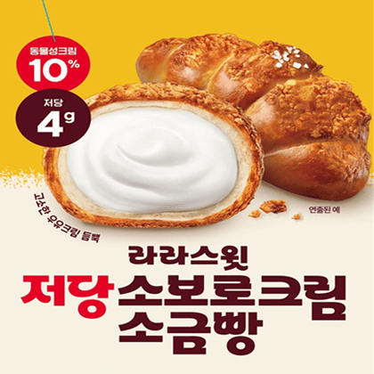 -
08조정치 호박고구마 크림빵
원주 소재 고구마 재배농가와의 협업을 통해 비규격 고구마 소비를 위한 조정치호박고구마크림빵 출시
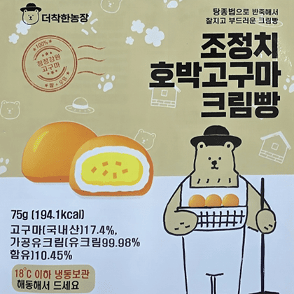 -
09편의점 성수 소금빵
CU편의점과 GS편의점에 에 저당브랜드인 [라라스윗]저당 소금빵 시리즈와 성수브랜드로 출시
- 저당크림,초코,흑임자,소보로
- 성수 생크림,피넛,초코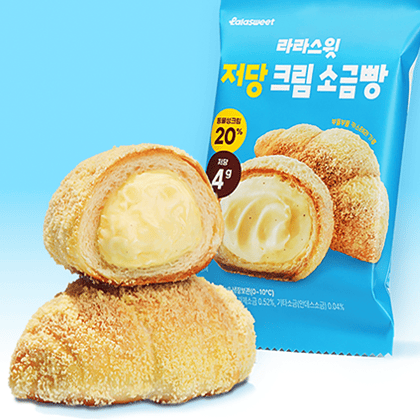
조직문화/복리후생
온세까세로만의 특별한 복지혜택을 소개합니다!
- 매년 전직원 해외여행(24년 대만, 25년 상해, 26년 두바이 예정)
- 식대를 급여에 포함하여 지급하고 있지만, 별도로 도시락을 희망하는 직원은 8,000원 상당의 도시락을 3,500원만 내고 나머지는 회사가 부담하고 있음.
- 6개월 단위로 우수직원을 뽑고 우수직원 중 최우수 직원은 직책승진을 부여 2025년 6월의 경우 총 9명의 우수사원을 선정, 대리(1명), 주임(4명)승진, 나머지 4명은 우수사원포상
현직자 복지후기
생산팀 홍수진 대리
작년 10월에 입사하여 아직 1년에 채 안된 근무연차지만 작년 말 우수사원으로 선정되어 급여인상 포상을 받았으며, 오해 6월부로 대리 승진을 되었습니다. 우리 회사는 승진 연차가 특별히 정해져 있지 않지만 개인의 노력에 따라 기회가 많은 것이 장점이라고 생각합니다.
기업전경
- 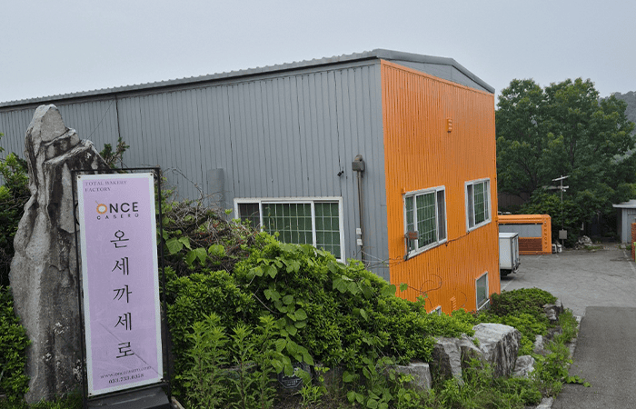
- 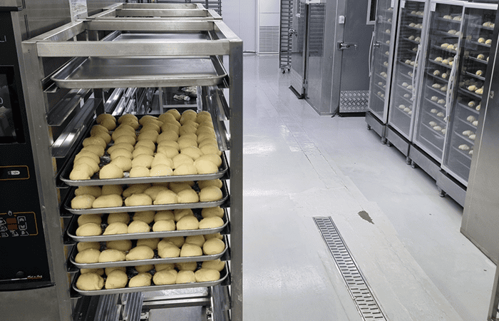
- 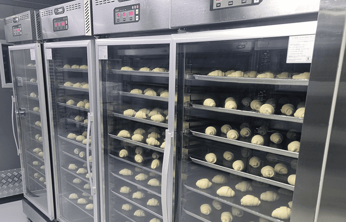
- 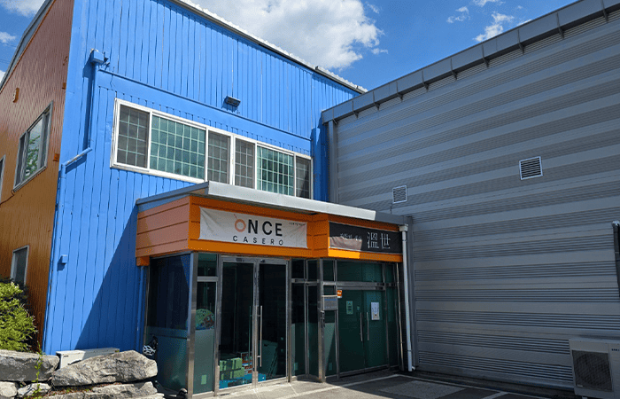
자소서 문항별 작성 가이드
기술해주세요.
본인의 장점
있는지에 대해서 기술해주세요
포부
자기계발 의지가 있는지에 대해서 기술해주세요
최근 면접
질문
처음 만난 사람과 대화를 잘 하는 편입니까?
같이 일하기 힘든 사람은 어떤 유형의 사람입니까?
직무 관련 경험이 있습니까?
가산점 요인
-
자격증
· 지게차 운전 기능사(수료증 대체가능)
· 운전면허증
· 컴퓨터자격증(엑셀,파워포인트,컴활 등등)
최근 입사자 합격 스펙
-
최종학력
고졸
-
자격증
4개
-
유관업무 경력
2~3년
채용담당자가 직접 알려주는 면접 꿀팁!
인사담당자로서 면접 꿀팁
· 면접 불참 시 미리 담당자에게 알리기
· 면접장소에 일찍 도착해 대기
· 묻지마 지원이 아닌 지원한 기업과 직무 분석
· 이력서를 과도하게 부풀리거나 거짓말 X
· 꾸민 답변이 아닌 핵심내용만 말하기
인사담당자님 눈에 가장 매력적인 지원자는?
적극적인 태도로 면접에 임하는 사람